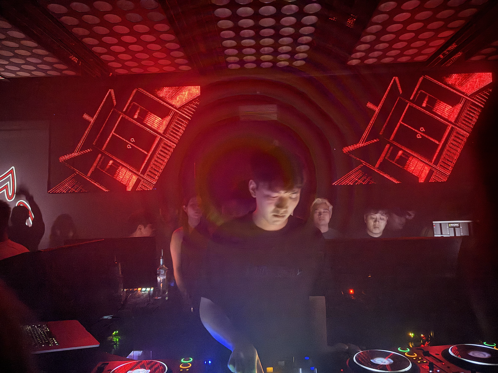
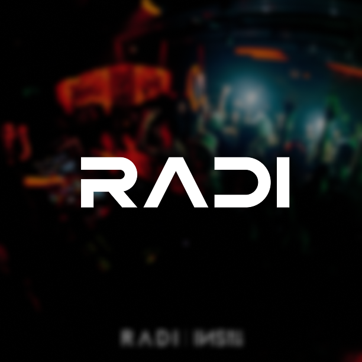

Shanghai After Dark
NEON STREETS, LATE-NIGHT CAFÉS, AND UNDERGROUND MUSIC SCENES REVEAL HOW SHANGHAI’S NIGHTLIFE IS SHAPING THE CITY’S FASHION AND CREATIVE CULTURE.
Shanghai has always had a reputation for staying up late, but lately it feels like the city doesn’t sleep at all. The moment the sun disappears behind the skyline in Jing’an or along the Bund, the pace of the city shifts. Restaurants turn into lounges, lounges turn into dance floors, and suddenly everyone you know is texting the same question: “Where are we going tonight?” In a city that moves this fast, nightlife isn’t just about music — it’s about style, energy, and the constant search for somewhere new.
A lot of Shanghai’s nightlife revolves around INS, the massive entertainment complex that feels more like a playground than a single club. Walking through INS is a bit surreal the first time. One minute you’re in a neon-lit hallway with people taking photos, the next you’re stepping into a completely different world with its own music, crowd, and atmosphere. Instead of one main room, INS splits the night into different experiences, each club offering its own vibe. Depending on your mood, you might find yourself dancing, people-watching, or just standing near the bar wondering how the night escalated so quickly.
Culture Club feels like the place where the night really begins. The room is dark and saturated with deep red lighting, and the crowd tends to lean toward the fashion crowd — people who clearly planned their outfits before leaving the house. The music is usually hip-hop and house, loud enough to pull you to the dance floor but relaxed enough that conversations still happen in the corners. It’s the kind of place where the DJ set blends into the background of a bigger social scene.
In Friends, you are in a completely different mood. The space feels warmer and more casual, almost like someone turned a lounge into a dance party. Groups tend to gather around the tables, drinks appear out of nowhere, and the night slowly builds from there. It’s less about intense clubbing and more about being with the people you came with — the kind of place where you realize hours have passed without noticing.

La Fin feels the most dramatic of the group. The lighting, the entrance, even the music all feel a bit more theatrical. It’s the sort of club where the night feels like an event rather than just another stop. The DJs lean toward electronic and house, and the crowd seems ready for it. When the room fills up, the energy changes quickly, and suddenly the dance floor becomes the only place anyone wants to be.
Radi is where things get louder, brighter, and slightly chaotic in the best way possible. Huge screens flash with color, the bass is impossible to ignore, and the crowd feels like it’s there purely to dance. Radi is the room people usually end up in when the night is fully underway. By that point, the music is louder, the lights are stronger, and the night feels like it might never actually end.

In a city like Shanghai, nightlife isn’t just about finding a place to go — it’s about moving between spaces, following the energy, and seeing where the night takes you. INS captures that perfectly. One building, four different worlds, and a thousand ways the night can unfold.